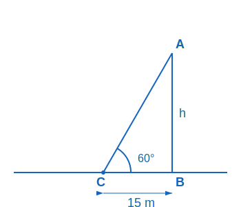
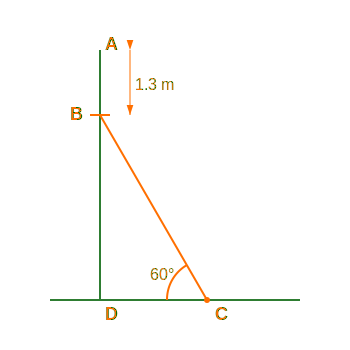
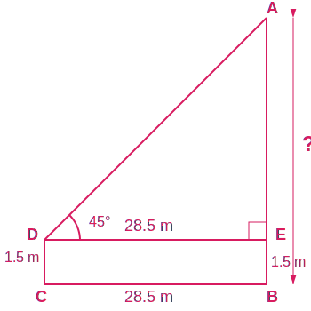
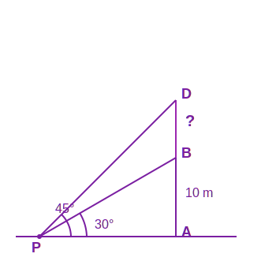
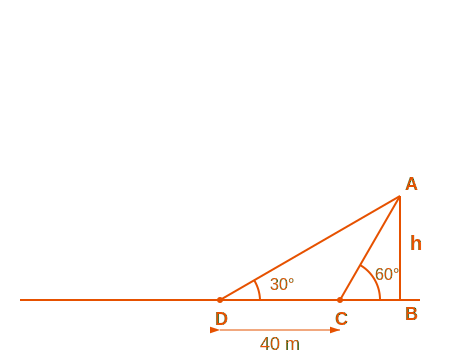
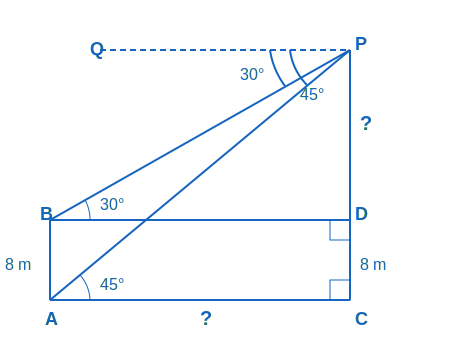
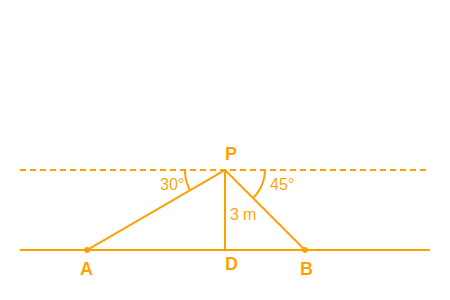

Example 1. A tower stands vertically on the ground... 15 m away... angle 60°. Find height.

Let height of tower be \(h\). Distance from foot is 15 m.
Angle of elevation \(\theta = 60^\circ\).
In the right triangle formed:
\(\tan 60^\circ = \frac{h}{15}\)
\(\sqrt{3} = \frac{h}{15}\)
\(h = 15\sqrt{3}\) m.
Therefore, the required value is \(15\sqrt{3}\) m.
Example 2. An electrician has to repair... pole height 5 m... reach point 1.3 m below
top... angle 60°. Find ladder length and distance.

Height of pole = 5 m. She needs to reach 1.3 m below top.
So, height of the point to reach \(AD = 5 - 1.3 = 3.7\) m.
Angle of inclination = 60°. Let ladder length be \(L\) and distance from foot be \(d\).
In the right triangle:
\(\sin 60^\circ = \frac{\text{Opposite}}{\text{Hypotenuse}} = \frac{3.7}{L}\)
\(\frac{\sqrt{3}}{2} = \frac{3.7}{L}\)
\(L = \frac{3.7 \times 2}{\sqrt{3}} = \frac{7.4}{1.73} \approx 4.28\) m.
Also, \(\cot 60^\circ = \frac{\text{Adjacent}}{\text{Opposite}} = \frac{d}{3.7}\)
\(\frac{1}{\sqrt{3}} = \frac{d}{3.7}\)
\(d = \frac{3.7}{1.73} \approx 2.14\) m.
Therefore, the required value is Length: 4.28 m; Distance: 2.14 m.
Example 3. An observer 1.5 m tall is 28.5 m away from a chimney... angle 45°. Find height
of chimney.

Let height of chimney above eye level be \(h\). Horizontal distance = 28.5 m.
Angle of elevation = 45°.
\(\tan 45^\circ = \frac{h}{28.5}\)
\(1 = \frac{h}{28.5}\)
\(h = 28.5\) m.
Total height of chimney = \(h + \text{observer height}\)
\(= 28.5 + 1.5 = 30\) m.
Therefore, the required value is 30 m.
Example 4. From a point P... elevation of 10 m building 30°... flagstaff 45°. Find length
of flagstaff.

Let height of building \(AB = 10\) m. Let distance \(PA = x\).
In right \(\triangle PAB\) (Angle 30°):
\(\tan 30^\circ = \frac{10}{x} \Rightarrow \frac{1}{\sqrt{3}} = \frac{10}{x} \Rightarrow x =
10\sqrt{3}\) m.
Let length of flagstaff be \(h\). Total height \(DB = 10 + h\).
In right \(\triangle PDB\) (Angle 45°):
\(\tan 45^\circ = \frac{10 + h}{x} \Rightarrow 1 = \frac{10 + h}{10\sqrt{3}}\)
\(10\sqrt{3} = 10 + h\)
\(h = 10\sqrt{3} - 10 = 10(\sqrt{3} - 1)\)
Substituting \(\sqrt{3} = 1.732\):
\(h = 10(0.732) = 7.32\) m.
Distance \(x = 10(1.732) = 17.32\) m.
Therefore, the required value is Length: 7.32 m; Distance: 17.32 m.
Example 5. Shadow of a tower... 40 m longer when altitude is 30° than when 60°. Find
height.

Let height of tower be \(h\). Let shadow length at 60° be \(x\).
Then shadow length at 30° is \(x + 40\).
In first triangle (60°): \(\tan 60^\circ = \frac{h}{x} \Rightarrow h = x\sqrt{3}\).
In second triangle (30°): \(\tan 30^\circ = \frac{h}{x + 40}\).
\(\frac{1}{\sqrt{3}} = \frac{x\sqrt{3}}{x + 40}\) (Substituting \(h\))
\(x + 40 = 3x \Rightarrow 2x = 40 \Rightarrow x = 20\) m.
Height \(h = 20\sqrt{3}\) m.
Therefore, the required value is \(20\sqrt{3}\) m.
Example 6. The angles of depression of top and bottom of 8 m building... are 30° and 45°.
Find height and distance.

Let height of tall building be \(H\) and small building be 8 m. Distance between them \(x\).
Angle of depression to bottom is 45° \(\Rightarrow\) Angle of elevation from bottom is 45°.
\(\tan 45^\circ = \frac{H}{x} \Rightarrow 1 = \frac{H}{x} \Rightarrow H = x\).
Angle to top is 30°. Height difference is \(H - 8\).
\(\tan 30^\circ = \frac{H - 8}{x} \Rightarrow \frac{1}{\sqrt{3}} = \frac{H - 8}{H}\).
\(H = \sqrt{3}(H - 8) \Rightarrow H\sqrt{3} - H = 8\sqrt{3}\).
\(H(\sqrt{3} - 1) = 8\sqrt{3}\)
\(H = \frac{8\sqrt{3}}{\sqrt{3} - 1}\)
Rationalizing: \(H = \frac{8\sqrt{3}(\sqrt{3} + 1)}{3 - 1} = \frac{8(3 + \sqrt{3})}{2} = 4(3 +
\sqrt{3})\) m.
Distance \(x = 4(3 + \sqrt{3})\) m.
Therefore, the required value is Height: \(4(3 + \sqrt{3})\) m; Distance: \(4(3 +
\sqrt{3})\) m.
Example 7. From a point on a bridge... angles of depression 30° and 45°. Height 3 m. Find
width.

Height of bridge \(h = 3\) m.
Width of river = distance to bank 1 + distance to bank 2 (\(x + y\)).
Bank 1 (Angle 30°): \(\tan 30^\circ = \frac{3}{x} \Rightarrow \frac{1}{\sqrt{3}} = \frac{3}{x}
\Rightarrow x = 3\sqrt{3}\).
Bank 2 (Angle 45°): \(\tan 45^\circ = \frac{3}{y} \Rightarrow 1 = \frac{3}{y} \Rightarrow y =
3\).
Total width = \(3\sqrt{3} + 3 = 3(\sqrt{3} + 1)\) m.
Therefore, the required value is \(3(\sqrt{3} + 1)\) m.